How to use this lesson
§0 · From last time. We have evals (8.1), judgment (8.2), and observability (8.3). Now we need to run the eval on every change automatically.
Business Scenario
A model release candidate (Sonnet 4.7 ships next month). Daniel: "Will Sherpa still work? Or will accuracy silently regress?"
Bridge to Topic
A regression eval, run in CI, blocks changes that hurt metrics. Same discipline as unit tests.
Mind Map

Mermaid source
mindmap
root((Regression))
Triggers
PR merge
Model upgrade
Prompt change
Tool change
Gates
Accuracy floor
Cost ceiling
Latency ceiling
Reporting
Per metric
Per slice
Diff vs baseline
Elaboration
4.1 What triggers a regression run
- Any change to prompts (file change)
- Any change to model version (config change)
- Any change to tool registry (schema change)
- Weekly cron (catch upstream model drift)
4.2 The gate
Accept iff:
accuracy_new >= accuracy_baseline - 1pp
AND cost_new <= cost_baseline * 1.10
AND p95_latency_new <= p95_latency_baseline * 1.15
AND no high-confidence wrong answers introduced
Strict enough to block real regressions, loose enough to allow legitimate trade-offs.
4.3 Per-slice reporting
Report not just aggregate metrics but per-slice:
- Per break category
- Per counterparty tier
- Per time of day
A change might raise aggregate accuracy while dropping one slice. Per-slice catches it.
4.4 The diff format
For each metric: baseline value, new value, delta, per-slice deltas, sample size. Reviewers see at a glance whether the change is safe.
Problem Statement
Build the regression CI pipeline. Includes: trigger, eval run, gate logic, report format, alerting on failure.
Solution Walkthrough
GitHub Actions workflow runs eval on every PR. Posts comment with the diff. Fails CI on gate breach. Slack alert on cron failures. lab-8.4/ ships the working pipeline.
Mathematical Foundation
7.1 The eval-as-test analogy
Software unit tests catch behavioural regressions. Agent evals catch statistical regressions. Same role; different math.
7.2 Eval set staleness
If you run the same eval daily for a year, agents may overfit (via prompt iteration). Refresh 20% of the set quarterly to keep honest signal.
Technical Deep-Dive
8.1 Caching eval results
LLM calls are deterministic with seeded sampling (where supported). Cache by (model, prompt, input) hash. Eval CI runs in minutes instead of hours.
8.2 The "shadow eval"
Run new versions against production traffic in shadow mode (not user-visible). Compare to live version. Catches issues the regression set misses.
8.3 Cost of evals
For Sherpa: 200-case eval × $0.05/case = $10/run. Runs ~50× per quarter = $500/quarter. Cheap.
8.4 The "eval as CI" implementation
A working setup:
# .github/workflows/eval.yml
name: Regression Eval
on:
pull_request:
paths:
- 'agents/**'
- 'prompts/**'
- 'tools/**'
schedule:
- cron: '0 6 * * *' # daily, 6am UTC
jobs:
eval:
runs-on: ubuntu-latest
steps:
- uses: actions/checkout@v4
- uses: pnpm/action-setup@v3
- run: pnpm install
- run: pnpm eval:regression --report eval-report.json
- uses: actions/upload-artifact@v4
with:
name: eval-report
path: eval-report.json
- run: pnpm eval:gate eval-report.json
# exits non-zero if any metric regresses past threshold
- if: failure()
uses: actions/github-script@v7
with:
script: |
const report = require('./eval-report.json');
const comment = formatRegressionReport(report);
github.rest.issues.createComment({
...context.repo,
issue_number: context.issue.number,
body: comment,
});
The comment back to the PR shows the diff. Reviewers see at a glance.
8.5 Eval-set rotation policy
After 12 months, even "frozen" eval sets become stale (distribution shifts, models trained on similar data, prompt iteration leaks). Rotation policy:
- Quarterly: replace 20% of the eval set with new cases from production. Retire oldest 20%.
- Annually: full audit. Are there entire failure modes the set doesn't cover?
- On distribution shift: if production traffic shape changes >10%, refresh affected slices immediately.
Without rotation: eval numbers converge to inflated values that don't reflect production.
8.6 The "release notes" generated from evals
Every release should ship with a one-page summary auto-generated from the eval run:
=== Sherpa v5.3.0 Release Notes ===
Quality (vs v5.2.1):
Accuracy: 87.5% (-0.5pp) ⚠
Calibration: ECE 0.04 (-0.01) ✓
Cost/task: $0.043 (-$0.002) ✓
p95 latency: 8.2s (+0.4s) ✓
Slice changes:
stale_static: 82.5% → 77.0% (-5.5pp) — INVESTIGATE
All other slices: within ±1pp
Adversarial tests: 30/30 pass (no regressions)
Citation faithfulness (RAG): 94.5% (+0.5pp) ✓
Changes shipped:
- New tool: query_settlement_v2 (improved cross-currency support)
- Prompt refresh: clearer instructions for novel counterparties
- Bug fix: trace renderer preserved newlines in tool outputs
Rollback procedure: revert to v5.2.1 by editing config.yaml line 12,
deploy. ETA: 4 min.
This document lives next to the deploy. Anyone debugging an incident has it in hand.
8.7 The "evals as documentation" insight
A well-maintained eval set IS your specification of correct behaviour. Better than written specs because:
- Specs go stale; eval failures break CI.
- Specs are ambiguous; eval cases are concrete.
- Specs hide assumptions; eval inputs surface them.
Treat the eval set as canonical. When the spec disagrees with the eval, the eval wins. When you find a behaviour you want, add it as an eval case.
8.8 Investment scaling: when to add eval infrastructure
| Stage | Eval investment |
|---|---|
| First agent prototype | Manual review of 10 traces; no infrastructure |
| Pre-production | 50-case regression set; CI gate; manual review |
| Production launch | 200-case regression + adversarial + LLM-as-judge for open-ended |
| Multi-team production | Shadow eval; per-team regression sets; calibration ensemble |
| Regulatory (banking, medical) | + Per-deployment audit log; explainability checks; quarterly red-team |
Don't over-invest before the agent is real. Don't under-invest after launch.
What This Unlocks
- Module 9 deep-dives on production engineering, including eval as part of deployment.